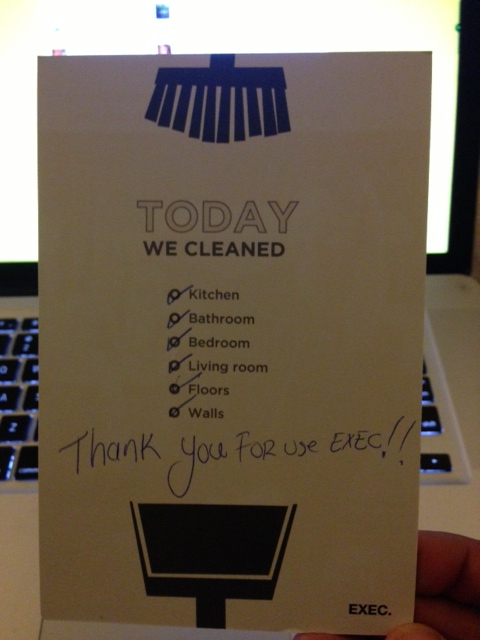

What You Missed
-
1.
 Google’s Nexus Strategy In A Nutshell: Cheap…
Darrell Etherington
Google’s Nexus Strategy In A Nutshell: Cheap…
Darrell Etherington
-
2.
 The Biggest Threat To LinkedIn: The Power Of…
Rip Empson
The Biggest Threat To LinkedIn: The Power Of…
Rip Empson
-
3.
 Mobile First, Web Second: Instagram Finally…
Alexia Tsotsis
Mobile First, Web Second: Instagram Finally…
Alexia Tsotsis
- 4.  Want To Pitch A VC While He Cleans Your House?… Drew Olanoff
-
5.
 Android Malware Surges Despite Google’s Efforts…
Natasha Lomas
Android Malware Surges Despite Google’s Efforts…
Natasha Lomas